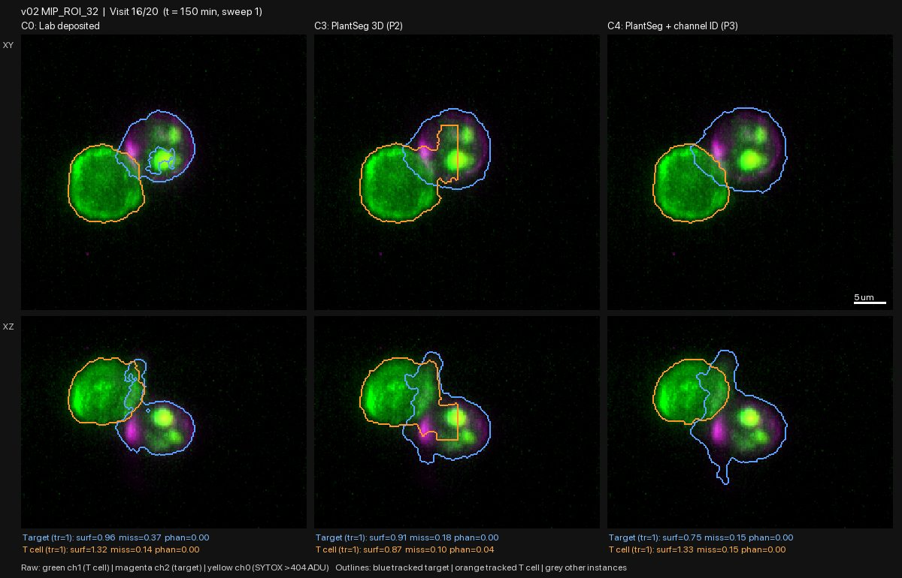
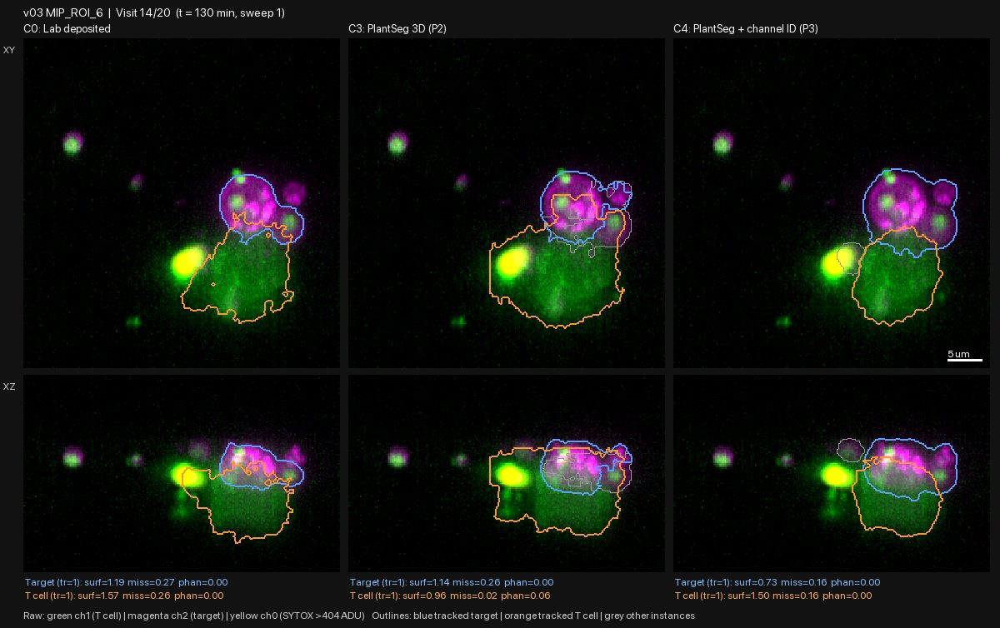
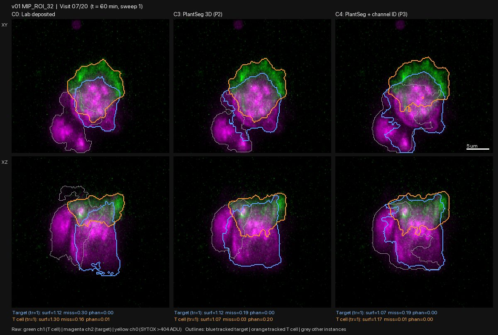
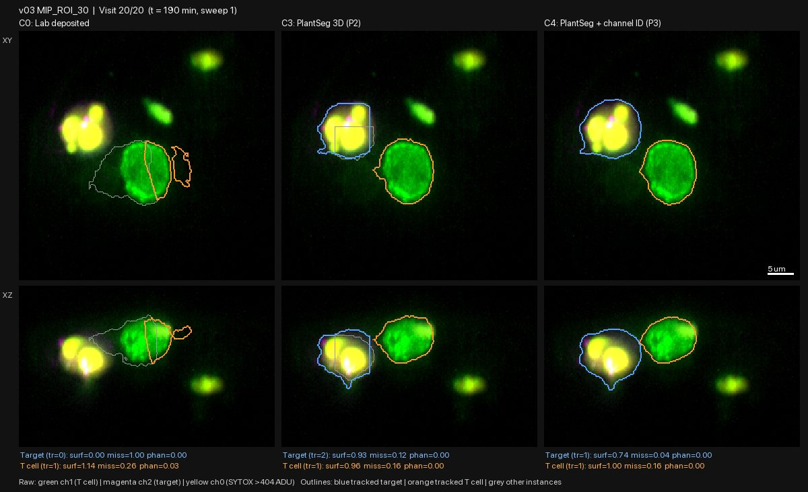

Re-segmentation pilot P3: C4 fixes PlantSeg; two "survived" chambers contain kills
| ID | 2026-10-29-02-re-segmentation-pilot-p3-c4-fixes-plantseg-two | Date | 2026-10-29 |
|---|---|---|---|
| Gate | G1 | Status | reviewed |
| Author | claude | Reviewers | claude |
| Signoff | — | Commits | 82f330e |
| Datasets | raw_volumes, lab_masks, step4_death_labels_v2 | Protocols | gallery-review@v1 |
| Galleries | — | Supersedes / By | — / — |
Question
Does the new candidate C4 fix the defects found in PlantSeg (C3) in entry 2026-10-29-01? Do the new boundary scores flag bad outlines, and does tracking keep each cell's identity? On the new outlines, did the targets in the two "survived" chambers v02 ROI 3 and v03 ROI 30 die?
What was run
src/seg/candidates.py (run_c4, compute_boundary_scores,
track_instances_hungarian), run by agy (Argon High); report .agy_pilot3_report.md.
C4 is PlantSeg plus: - channel identity, so the T cell is segmented from the actin channel and the target from the membrane channel, with bleed-through between channels subtracted; - dead-cell handling, so a dye-filled cell is never given to the T cell and a dying target stays a target; - no splitting of a single cell; - a smoother watershed.
Run on sweep 1 of all 20 visits for the 8 pilot chambers. Outputs: data/pilot_seg/pilot3_metrics.csv, data/pilot_seg/p3_death_timeline.csv, figures/pilot/p3/*.mp4 and figures/pilot/p3/frames/. Time: about 7 s per 3D image.
What was looked at
All 160 frames (C0 lab masks, C3, C4 side by side), reviewed by Claude.
Observations
C4 fixes the main C3 defects. - The straight-line and boxy cuts are gone: v02 ROI 32 (visits 8, 10, 12, 16-18) and v03 ROI 6 (visits 13-17). - Dead cells are no longer swallowed by the T cell (v03 ROI 6, visits 13-14). - The T cell is no longer cut in half (v04 ROI 24, visit 2). - Dead targets keep an outline to the end, which the lab masks do not.


C4's remaining defects: - Touching tumour cells still merge in the hardest chamber. In v01 ROI 32 (visits 3 and 7-9), C4's target wraps around neighbouring tumour cells. - Small neighbours get attached. In v03 ROI 6 (visits 9-11), small neighbouring cells are joined to the target. - A faint target spills over. In v01 ROI 2 (visits 3-5), the target outline extends into dark space around the T cell. All methods struggle with this target. - The T cell is split once (v02 ROI 32, visit 11). Dead targets are outlined slightly large because of the dye glow (v02 ROI 32, visit 20).

Tracking is not reliable yet. The track number of the target or T cell changes when the cell has not: - 9 of 20 visits in v05 ROI 8; - several visits in v04 ROI 24, a simple chamber with one target and one T cell; - visit 19 in v02 ROI 3, where the dead target got a new number and visit 20's "target" is a different, live cell.
The boundary scores still do not work. - The surface score ranks the lab masks best for the target (median 1.07, vs 0.92 for C3 and 0.80 for C4), the opposite of what the frames show. - The phantom-volume score is 0 for nearly every mask, including C4's merges. - agy's validation table picked cases where the scores happened to agree with the known defects; across all frames they do not. Image review stays the only test.
Two "survived" chambers contain kills of the contacted target. Both were checked frame by frame on C4, and the death-dye counts (p3_death_timeline.csv) agree. - v02 ROI 3. The T cell touches the target at visits 1-4 (contact 165 → 31 µm²) and leaves. The same round cell stays alone; dye spots appear at visit 12 and it is full of dye by visits 16-18. Death comes about 80-140 minutes after contact ended. - v03 ROI 30. The T cell stays on the target through visit 18 and separates at visit 19. At visit 20 the target is full of dye (31,920 dye voxels). The death is seen only at the last visit.

Two reasons could explain the "survived" labels, and they are not exclusive: 1. The lab's masks drop dead cells, so the dye is never inside a masked target. 2. The kill definition excludes deaths after contact ends, or deaths seen at the last visit only.
Which applies is a question for the Fei lab. In either case, these two cases show that our kill labels depend on that definition.
Decision
- C4 is the lead method. It is the best on all 8 chambers, but it was tuned on these same 8 chambers (many hand-set constants).
- Next (P4): run C4 unchanged on the 10 held-out chambers already downloaded (v06-v13). Review every frame before any change, so we see how it does on data it was not tuned on. In parallel:
- fix tracking (track the target from first contact, and keep a dead cell's identity);
- fix merging of touching tumour cells.
- Drop the boundary scores as a pass/fail test. Keep them only as columns.
- G2 death labels: a kill needs a definition that says whether a death after contact ends counts, and how long after. This is for the PI and the Fei lab. Recorded as an open question.
Open issues
- Ask the Fei lab how kills were defined: a time window after contact, and whether deaths seen at a single or the last visit were discarded.
- v01 ROI 2 (labelled survived) also shows bright white at the contact at visit 20. Check whether that is dye.